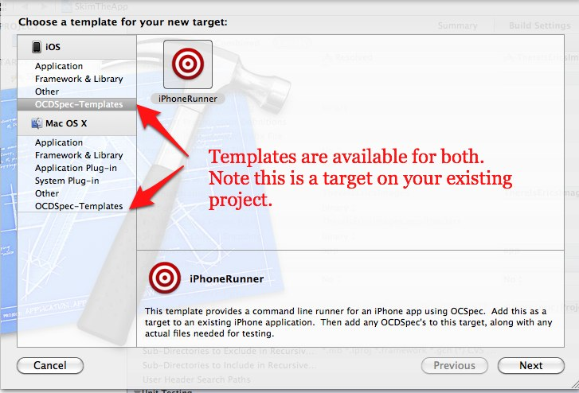

OCDSpec is a TDD/BDD framework inspired by RSpec and Jasmine. Unlike similar frameworks it does not depend on OCUnit, and has a silent command line runner for iPhone. It's goals are as follows:
The latest release of OCDSpec is distributed via the OCDSpec-Templates project, which uses XCode templates to make getting started easy. To install them:
$ cd ~/Library/Developer/Xcode
$ mkdir Templates
$ cd Templates
$ git clone git://github.com/paytonrules/OCDSpec-Templates.git
Now that the templates are on your machine you can use OCDSpec much like you do OCUnit or any other project. Either open an existing Objective-C project or create a new one, it can be Mac or iPhone, and then add an OCDSpec target via File->New Target or the Add Target button on the targets page.

Every time you build this target it builds OCDSpec and runs any unit test. Of course right now you don't have any, an inconvenience we will soon be rectifying. You can use the file template to create your first test:
Copyright (c) 2011 Eric Smith
Permission is hereby granted, free of charge, to any person obtaining a copy of this software and associated documentation files (the "Software"), to deal in the Software without restriction, including without limitation the rights to use, copy, modify, merge, publish, distribute, sublicense, and/or sell copies of the Software, and to permit persons to whom the Software is furnished to do so, subject to the following conditions:The above copyright notice and this permission notice shall be included in all copies or substantial portions of the Software.
THE SOFTWARE IS PROVIDED "AS IS", WITHOUT WARRANTY OF ANY KIND, EXPRESS OR IMPLIED, INCLUDING BUT NOT LIMITED TO THE WARRANTIES OF MERCHANTABILITY, FITNESS FOR A PARTICULAR PURPOSE AND NONINFRINGEMENT. IN NO EVENT SHALL THE AUTHORS OR COPYRIGHT HOLDERS BE LIABLE FOR ANY CLAIM, DAMAGES OR OTHER LIABILITY, WHETHER IN AN ACTION OF CONTRACT, TORT OR OTHERWISE, ARISING FROM, OUT OF OR IN CONNECTION WITH THE SOFTWARE OR THE USE OR OTHER DEALINGS IN THE SOFTWARE.
Eric Meyer (emeyer@8thlight.com)
Eric Smith (eric@8thlight.com)
skim (skim.la@gmail.com)
Eric Smith (eric@8thlight.com)
You can download this project in either zip or tar formats.
You can also clone the project with Git by running:
$ git clone git://github.com/paytonrules/OCDSpec